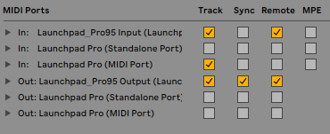

Install
It needs Ableton Live 11 or later (any edition, macOS or Windows). For Live 9.5 and Live 10, use the archived release for older Lives.
- Unzip Launchpad_Pro95.zip and copy the Launchpad_Pro95 folder into the Remote Scripts folder of your Ableton User Library (create that folder if needed). Live shows where your User Library is in Settings → Library. Keep the folder name exactly
Launchpad_Pro95.
- Plug in the Launchpad Pro and start Live (restart it if it was running).
- Open Settings → Link, Tempo & MIDI (Preferences in Live 11). In a free Control Surface slot choose Launchpad_Pro95, and for its Input and Output the Launchpad Pro's Live port (Launchpad Pro (Live Port) on macOS).

- In the MIDI Ports list, turn on Track and Remote for the Launchpad_Pro95 input, and Track, Sync and Remote for its output.
